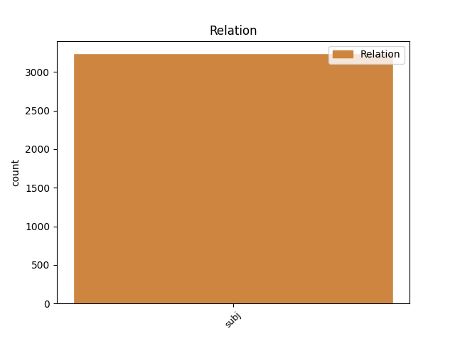
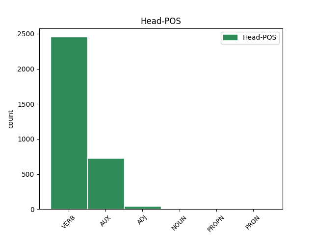
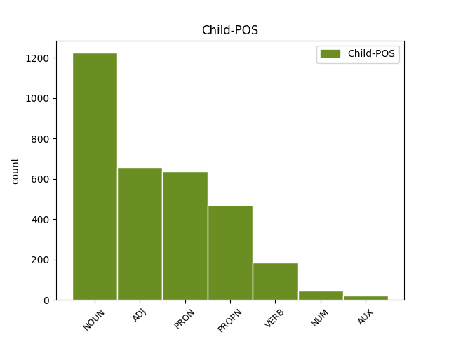

Distribution of features within this leaf



Agreement Rules sorted by frequency.
- When the dependent token is the subject(subj) of the head token, and the dependent token is NOUN.
1 Ꙇ҅ _ _ _ _ 0 _ _ _
2 по _ _ _ _ 0 _ _ _
3 осми _ _ _ _ 0 _ _ _
4 денъ _ _ _ _ 0 _ _ _
5 пакꙑ _ _ _ _ 0 _ _ _
6 бѣа҅хѫ бꙑти AUX V- Aspect=Imp|Mood=Ind|Number=Plur|Person=3|Tense=Past|VerbForm=Fin|Voice=Act 0 _ _ _
7 вънѫтрь _ _ _ _ 0 _ _ _
8 оученици оученикъ NOUN Nb Case=Nom|Gender=Masc|Number=Plur 6 subj _ ref=JOHN_20.26
9 его _ _ _ _ 0 _ _ _
10 ꙇ _ _ _ _ 0 _ _ _
11 тома _ _ _ _ 0 _ _ _
12 съ _ _ _ _ 0 _ _ _
13 ними _ _ _ _ 0 _ _ _
1 онъ онъ ADJ Pd Case=Nom|Gender=Masc|Number=Sing 3 subj _ ref=JOHN_20.25
2 же _ _ _ _ 0 _ _ _
3 рече рещи VERB V- Aspect=Perf|Mood=Ind|Number=Sing|Person=3|Tense=Past|VerbForm=Fin|Voice=Act 0 _ _ _
4 имъ _ _ _ _ 0 _ _ _
1 ѣкоже _ _ _ _ 0 _ _ _
2 посъла _ _ _ _ 0 _ _ _
3 мѧ _ _ _ _ 0 _ _ _
4 отъцъ _ _ _ _ 0 _ _ _
5 и _ _ _ _ 0 _ _ _
6 азъ азъ PRON Pp Case=Nom|Number=Sing|Person=1|PronType=Prs 7 subj _ ref=JOHN_20.21
7 сълѫ сълати VERB V- Mood=Ind|Number=Sing|Person=1|Tense=Pres|VerbForm=Fin|Voice=Act 0 _ _ _
8 вꙑ _ _ _ _ 0 _ _ _
1 си _ _ _ _ 0 _ _ _
2 же _ _ _ _ 0 _ _ _
3 писана _ _ _ _ 0 _ _ _
4 бꙑшѧ _ _ _ _ 0 _ _ _
5 да _ _ _ _ 0 _ _ _
6 вѣрѫ _ _ _ _ 0 _ _ _
7 имете _ _ _ _ 0 _ _ _
8 ѣко _ _ _ _ 0 _ _ _
9 и҃с исоусъ PROPN Ne Case=Nom|Gender=Masc|Number=Sing 10 subj _ ref=JOHN_20.31
10 естъ бꙑти AUX V- Mood=Ind|Number=Sing|Person=3|Tense=Pres|VerbForm=Fin|Voice=Act 0 _ _ _
11 х҃ъ _ _ _ _ 0 _ _ _
12 с҃нъ _ _ _ _ 0 _ _ _
13 б҃жіи _ _ _ _ 0 _ _ _
14 ꙇ _ _ _ _ 0 _ _ _
15 да _ _ _ _ 0 _ _ _
16 вѣрѫѭште _ _ _ _ 0 _ _ _
17 живота _ _ _ _ 0 _ _ _
18 вѣчънааго _ _ _ _ 0 _ _ _
19 имате _ _ _ _ 0 _ _ _
20 въ _ _ _ _ 0 _ _ _
21 імѧ _ _ _ _ 0 _ _ _
22 его _ _ _ _ 0 _ _ _
1 блажени блаженъ ADJ A- Case=Nom|Degree=Pos|Gender=Masc|Number=Plur|Strength=Strong 0 _ _ _
2 не _ _ _ _ 0 _ _ _
3 видѣвъ. видѣти VERB V- Case=Nom|Gender=Masc|Number=Plur|Strength=Weak|Tense=Past|VerbForm=Part|Voice=Act 1 subj _ ref=JOHN_20.29
4 шеи _ _ _ _ 0 _ _ _
5 ꙇ _ _ _ _ 0 _ _ _
6 вѣровавъшеи _ _ _ _ 0 _ _ _
1 течаашете тещи VERB V- Aspect=Imp|Mood=Ind|Number=Dual|Person=3|Tense=Past|VerbForm=Fin|Voice=Act 0 _ _ _
2 же _ _ _ _ 0 _ _ _
3 оба оба NUM Ma Case=Nom|Gender=Masc|Number=Dual 1 subj _ ref=JOHN_20.4
4 въ _ _ _ _ 0 _ _ _
5 коупѣ _ _ _ _ 0 _ _ _
1 ꙇже _ _ _ _ 0 _ _ _
2 бѫдетъ бꙑти AUX V- Mood=Ind|Number=Sing|Person=3|Tense=Fut|VerbForm=Fin|Voice=Act 9 subj _ ref=JOHN_15.5
3 въ _ _ _ _ 0 _ _ _
4 мьнѣ _ _ _ _ 0 _ _ _
5 и _ _ _ _ 0 _ _ _
6 азъ _ _ _ _ 0 _ _ _
7 въ _ _ _ _ 0 _ _ _
8 немь _ _ _ _ 0 _ _ _
9 сътворитъ сътворити VERB V- Mood=Ind|Number=Sing|Person=3|Tense=Pres|VerbForm=Fin|Voice=Act 0 _ _ _
10 плодъ _ _ _ _ 0 _ _ _
11 мъногъ _ _ _ _ 0 _ _ _
12 ѣко _ _ _ _ 0 _ _ _
13 без _ _ _ _ 0 _ _ _
14 мене _ _ _ _ 0 _ _ _
15 не _ _ _ _ 0 _ _ _
16 можете _ _ _ _ 0 _ _ _
17 творити _ _ _ _ 0 _ _ _
18 ничесоже _ _ _ _ 0 _ _ _
Disagree Examples:
1 Еще _ _ _ _ 0 _ _ _
2 емоу _ _ _ _ 0 _ _ _
3 глаголѭщоу _ _ _ _ 0 _ _ _
4 къ _ _ _ _ 0 _ _ _
5 народомъ _ _ _ _ 0 _ _ _
6 се _ _ _ _ 0 _ _ _
7 мати мати NOUN Nb Case=Nom|Gender=Fem|Number=Sing 11 subj _ ref=MATT_12.46
8 и _ _ _ _ 0 _ _ _
9 братрьѣ _ _ _ _ 0 _ _ _
10 его _ _ _ _ 0 _ _ _
11 стоѣхѫ стоꙗти VERB V- Aspect=Imp|Mood=Ind|Number=Plur|Person=3|Tense=Past|VerbForm=Fin|Voice=Act 0 _ _ _
12 вьнѣ _ _ _ _ 0 _ _ _
13 ꙇскѫште _ _ _ _ 0 _ _ _
14 г҃лти _ _ _ _ 0 _ _ _
15 емоу _ _ _ _ 0 _ _ _
1 се _ _ _ _ 0 _ _ _
2 мати мати NOUN Nb Case=Nom|Gender=Fem|Number=Sing 8 subj _ ref=MATT_12.47
3 твоѣ _ _ _ _ 0 _ _ _
4 и _ _ _ _ 0 _ _ _
5 братрьѣ _ _ _ _ 0 _ _ _
6 твоѣ _ _ _ _ 0 _ _ _
7 вьнѣ _ _ _ _ 0 _ _ _
8 стоѩтъ стоꙗти VERB V- Mood=Ind|Number=Plur|Person=3|Tense=Pres|VerbForm=Fin|Voice=Act 0 _ _ _
9 хотѧще _ _ _ _ 0 _ _ _
10 г҃лти _ _ _ _ 0 _ _ _
11 къ _ _ _ _ 0 _ _ _
12 тебѣ _ _ _ _ 0 _ _ _
1 къто _ _ _ _ 0 _ _ _
2 естъ _ _ _ _ 0 _ _ _
3 мати _ _ _ _ 0 _ _ _
4 моѣ _ _ _ _ 0 _ _ _
5 и _ _ _ _ 0 _ _ _
6 кто къто PRON Pi Case=Nom|Number=Sing|PronType=Int 7 subj _ ref=MATT_12.48
7 сѫтъ бꙑти AUX V- Mood=Ind|Number=Plur|Person=3|Tense=Pres|VerbForm=Fin|Voice=Act 0 _ _ _
8 братриѣ _ _ _ _ 0 _ _ _
9 моѣ _ _ _ _ 0 _ _ _
1 съпѧщемъ съпати VERB V- Case=Dat|Gender=Masc|Number=Sing|Strength=Strong|Tense=Pres|VerbForm=Part|Voice=Act 0 _ _ _
2 же _ _ _ _ 0 _ _ _
3 ч҃лвкомъ чловѣкъ NOUN Nb Case=Dat|Gender=Masc|Number=Plur 1 subj _ ref=MATT_13.25
4 приде _ _ _ _ 0 _ _ _
5 врагъ _ _ _ _ 0 _ _ _
6 его _ _ _ _ 0 _ _ _
7 и _ _ _ _ 0 _ _ _
8 вьсѣ _ _ _ _ 0 _ _ _
9 плѣвелъ _ _ _ _ 0 _ _ _
10 по _ _ _ _ 0 _ _ _
11 срѣдѣ _ _ _ _ 0 _ _ _
12 пшеницѧ _ _ _ _ 0 _ _ _
13 и _ _ _ _ 0 _ _ _
14 отиде _ _ _ _ 0 _ _ _
1 доброе _ _ _ _ 0 _ _ _
2 же _ _ _ _ 0 _ _ _
3 сѣмѧ _ _ _ _ 0 _ _ _
4 се сь ADJ Pd Case=Nom|Gender=Neut|Number=Sing 5 subj _ ref=MATT_13.38
5 сѫтъ бꙑти AUX V- Mood=Ind|Number=Plur|Person=3|Tense=Pres|VerbForm=Fin|Voice=Act 0 _ _ _
6 с҃нве _ _ _ _ 0 _ _ _
7 ц҃срствиѣ _ _ _ _ 0 _ _ _